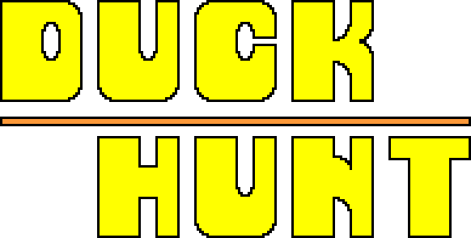

Edycja 2018 została zakończona. Dziękujemy za udział!
/*
Sezon na kaczki w Iławie rozpoczęty!
*/
Miej oczy szeroko otwarte! Z lokalnego schroniska dla dzikich zwierząt uciekły ponad 64 małe kaczuszki. Pomóż nam je odnaleźć!
Użyj hasztagu #DuckHuntIława na Facebooku, Instagramie bądź Twitterze aby podzielić się z nami gdzie odnalazłeś nasze zguby.
Śledź nas na Instagramie (@duckhuntofficial) aby otrzymywać wskazówki!
/*Dla najbardziej pomocnej osoby bądź grupy poszukiwaczy przewidziana jest nagroda! */`
Dołącz do zabawy:
Instagram |
Facebook |
Twitter
#DuckHuntIława